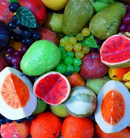

Cores fruits
What are cores fruits?
Core fruits, also known as ‘pome’ fruits, are characterized by a central seed-containing area surrounded by a thick layer of juicy flesh. This core consists of several small seeds.
What are the benefits of cores fruits?
-
The core has high concentration of Bromelain as compared to the
fruit and hence is more beneficial
-
Also it is a great source of Vitamin C, just like the fruit, and boosts your immunity.
-
Bromelain also improves heart health and helps in thinning of the mucus in conditions like asthma, for easy breathing.
Some examples of cores fruits
Some core fruits include apples, pears, and nashi, etc.